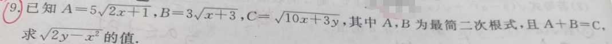

p9 最简二次根式与同类二次根式
计算填空
二次根式最简二次根式同类二次根式
★★★☆

📷 点击查看原图
已知 A=52x+1，B=3x+3，C=10x+3y，其中 A、B 为最简二次根式，且 A+B=C，求 2y−x2 的值。
📌 知识点总结（点击展开／收起）
📌 知识点总结
| 知识点 | 说明 |
|---|
| 最简二次根式 | 被开方数不含分母，不含能开得尽方的因数或式 |
| 同类二次根式 | 根指数相同且被开方数相同的二次根式才能合并 |
| 二次根式加减 | 先化为同类二次根式，再合并系数 |
| 等式两边平方 | 二次根式等式可通过两边平方化为整式方程 |
✍️ 解题过程
第一步：分析"最简二次根式"条件
最简二次根式：被开方数不含分母，且不含能开得尽方的因数。
A=52x+1，B=3x+3 要为最简二次根式，根号内不能再开方。要让 A 和 B 能相加等于 C（也是一个二次根式），A 和 B 必须是同类二次根式（根号内相同）。
第二步：令 A、B 化为同类二次根式（详细推导）
题目关键条件：A+B=C，即 52x+1+3x+3=10x+3y。
🔍 核心推理：左边的两个二次根式相加后，右边只得到一个二次根式。
📌 二次根式加减的铁律：只有同类二次根式才能合并！就像 5 个苹果 + 3 个苹果 = 8 个苹果，但 5 个苹果 + 3 个橘子不能合并成一个东西。
🧠 反证理解：如果
2x+1=x+3，那么
2x+1 和
x+3 是
不同类的二次根式，它们相加后仍是两个根式的和，无法合并成一个单独的根式。但题目说
A+B=C，而
C=10x+3y 只有一个根号！所以左边的两个根式
必须能合并成一个。
因此，A 和 B 必须是同类二次根式，即根号内的式子必须相同：
2x+1=x+3→x=2
✅ 代入验证：当
x=2 时，
A=55，
B=35 →
A+B=85=320，确实合并成了一个根式 ✓
同时验证"最简"条件：2x+1=5，x+3=5，都不是完全平方数，满足最简二次根式要求 ✓
第三步：求 y
55+35=10x+3y
85=10×2+3y=20+3y
两边平方：64×5=20+3y→320=20+3y→3y=300→y=100
第四步：求最终结果
2y−x2=2×100−22=200−4=196=14
📚 南昌/江西中考类似题（同类拓展）
题1（江西·中考·选择）：下列二次根式中，是最简二次根式的是（ ）A. 8 B. 0.5 C. 5 D. 12
💡 答：C。最简二次根式要求被开方数不含分母、不含能开得尽方的因数。📄 查看详细解答 →
题2（江西·中考·选择）：下列二次根式中，与 3 是同类二次根式的是（ ）A. 8 B. 12 C. 18 D. 24
💡 答：B。先化为最简，12=23 与 3 被开方数相同。📄 查看详细解答 →
题3（江西·中考·填空）：若最简二次根式 3a−8 与 17−2a 是同类二次根式，则 a= ______。
💡 答：5。同类二次根式被开方数相同，令 3a−8=17−2a 解出 a。📄 查看详细解答 →
📌 来源：江西中考"最简二次根式与同类二次根式"同类改编题